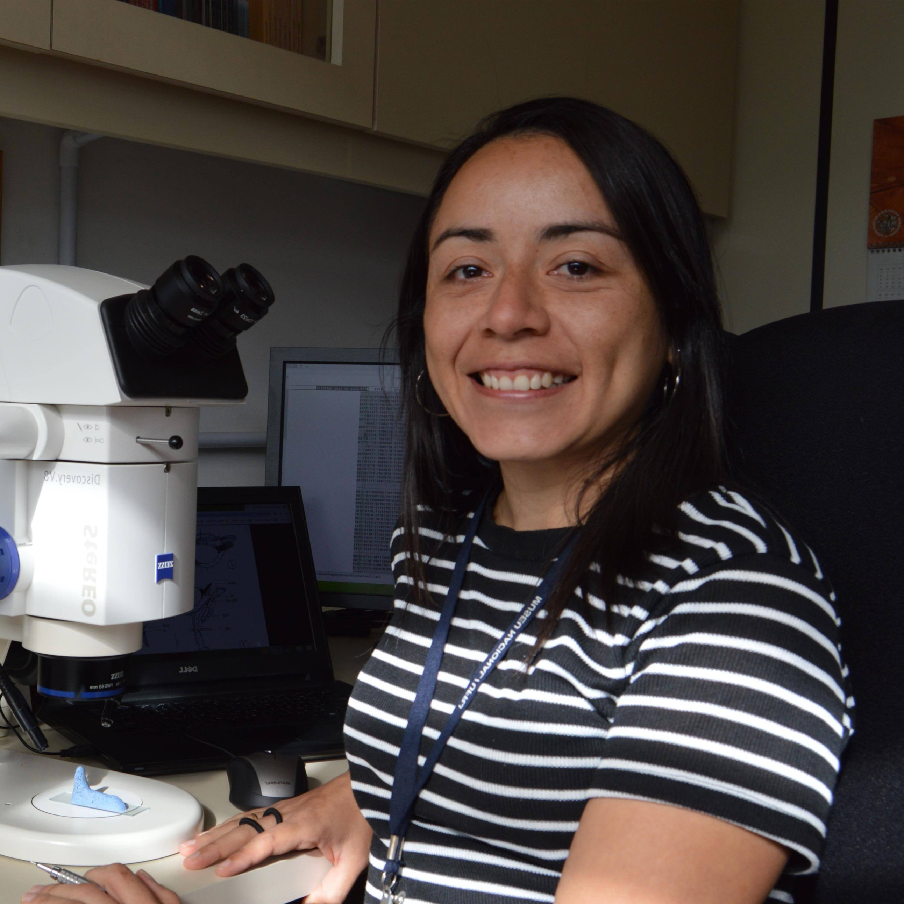

TATIANA SEPÚLVEDA
Entomologist, Ph.D.
I am a taxonomist and evolutionary biologist conducting research on insects at the TaxonLab, Universidade Federal do Paraná, Brazil. My research is mainly focused on the systematics and evolution of neriid flies (Diptera), a charismatic group of flies commonly known by their aggressive male-male engagement in combats for oviposition sites and fertile females. I am also leading a project on the taxonomy of the hover fly genus Copestylum, one of the most diverse genera of Syrphidae endemic to the neotropics. As a member of the TaxonLab, I collaborate in projects on the systematics and evolution of flat-faced longhorned beetles (Cerambycidae, Lamiinae), the most diverse and fascinating subfamily of Cerambycidae (Coleoptera).
I am also involved in several outreach projects dealing with the promotion of Biology as a vibrant professional option for curious young students, as well as the enhancement of access to scientific knowledge not only for other researchers but for any person passioned about science.
If you want to learn more about my research and projects, click on the tabs above!
Universidade Federal de Paraná
Universidade Federal de Paraná
Centro Politécnico
Setor de Ciências Biológicas
Departamento de Zoologia
Curitiba, 81531-970, Brazil